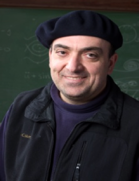
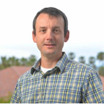
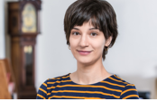
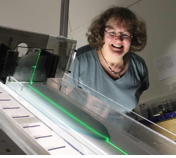

|
Invited Talks of Machine Learning Workshop Zoom Room: https://psu.zoom.us/j/97037326459 |
||
|
Dec. 14, Monday
(EST) |
||
|
Session 1 (Chair: Jinchao Xu) |
||
|
10:00-11:00 Talk: 10:00-10:45 Q&A: 10:45-11:00 |
Photo Credit: Les Todd |
Title: Low-dimensional
manifolds in high-dimensional data sets |
|
Abstract: Diffusion methods help understand and denoise data
sets; when there is additional structure (as is often the case), one can use
(and get additional benefit from) a fiber bundle model. |
||
|
Brief Bio: Ingrid Daubechies earned her Ph.D. in theoretical
physics from Vrije Universiteit Brussel. She currently holds the title of
James B. Duke Professor of Mathematics and Electrical and Computer Engineering
at Duke University. Her academic work focuses on mathematical methods for the
analysis of signals, images and data, with applications in many directions.
Ingrid enjoys working in collaboration with others, in her scientific work as
well as otherwise. Her latest collaboration is a Simons Foundation/Duke
University funded art project. |
||
|
11:00-12:00 Talk: 11:00-11:45 Q&A: 11:45-12:00 |
Andrew
Stuart |
Title: Learning
Operators |
|
Abstract: Consider Banach spaces of functions X and Y, and map
F: X --> Y. Given data pairs {xj, F(xj)} the goal of
supervised learning is to approximate F. Motivated by the recent successes of
neural networks and deep learning in addressing this problem in settings
where X is a finite dimensional Euclidean space and where Y is either a
finite dimensional Euclidean space (regression) or a set of finite
cardinality (classification), we discuss algorithms which address the problem
for spaces of functions X and Y. The resulting algorithms have the potential
to speed-up large-scale computational tasks arising in science and engineering
in which F must be evaluated many times. The talk describes existing work in
this area, introduces a new, overarching approach, and describes a number of
distinct methodologies which are built from this approach. Basic theoretical
results are explained and numerical results presented for solution operators
arising from elliptic PDEs, from Burgers equation and from the Navier-Stokes
equation. |
||
|
Brief Bio: Andrew Stuart has research interests in applied and
computational mathematics, and is interested in particular in the question of
how to optimally combine complex mechanistic models with data. He joined
Caltech in 2016 as Bren Professor of Computing and Mathematical Sciences,
after 17 years as Professor of Mathematics at the University of Warwick
(1999--2016). Prior to that he was on the faculty in The Departments of
Computer Science and Mechanical Engineering at Stanford University
(1992--1999), and in the Mathematics Department at Bath University
(1989--1992). He obtained his PhD from the Oxford University Computing
Laboratory in 1986, and held postdoctoral positions in Mathematics at Oxford
University and at MIT in the period 1986--1989 |
||
|
12:00-13:00 Talk: 12:00-12:45 Q&A: 12:45-13:00 |
John Urschel |
Title: Stress
Minimization for Low Diameter Graphs |
|
Abstract: Force-directed layouts are a class of techniques for
drawing a graph in a low-dimensional Euclidean space. In this talk, we review
some of the major force-directed algorithms, such as Tutte's spring embedding
theorem, the Kamada-Kawai algorithm, and the much more recent UMAP algorithm.
In addition, we focus specifically on the stress objective function and
consider both algorithmic lower bounds and approximation algorithms for this
optimization problem. |
||
|
Brief Bio: John Urschel is a fifth year
PhD student in mathematics at MIT. Urschel received both his bachelor's and
master's degrees in mathematics from Penn State University. In 2017, Urschel
was named to Forbes' "30 under 30" list of outstanding young
scientists. His research interests include numerical analysis, graph theory,
and data science/machine learning. He is expected to graduate from MIT in
Spring 2021. |
||
|
Session 2 (Chair:) |
||
|
14:00-15:00 Talk: 14:00-14:45 Q&A: 14:45-15:00 |
 George Em Karniadakis |
Title: DepOnet - Theory-based
learning of general nonlinear multiscale operators |
|
Abstract: It is widely known that neural networks (NNs) are
universal approximators of continuous functions, however, a less known but
powerful result is that a NN with a single hidden layer can approximate
accurately any nonlinear continuous operator. This universal approximation
theorem of operators is suggestive of the potential of NNs in learning from
scattered data any continuous operator or complex system. We first generalize
the theorem to deep neural networks, and subsequently we apply it to design a
new composite NN with small generalization error, the deep operator network
(DeepONet), consisting of a NN for encoding the discrete input function space
(branch net) and another NN for encoding the domain of the output functions
(trunk net). We demonstrate that DeepONet can learn various explicit
operators, e.g., integrals, Laplace transforms and fractional Laplacians, as
well as implicit operators that represent deterministic and stochastic
differential equations. More generally, it can learn multiscale operators
spanning across atomistic and continuum scales and trained by molecular
dynamics and PDE-based data simultaneously. We will also present different
formulations of the input function space and its effect on the generalization
error. For multiphysics problems, pretrained DeepOnets can be used as
building blocks to formulate a new DeepM&Mnet, and we will demonstrate
its unique capability in a 7-field hypersonics application. |
||
|
Brief Bio: Karniadakis received his S.M. and Ph.D. from
Massachusetts Institute of Technology. He was appointed Lecturer in the
Department of Mechanical Engineering at MIT in 1987 and subsequently he
joined the Center for Turbulence Research at Stanford / Nasa Ames. He joined
Princeton University as Assistant Professor in the Department of Mechanical
and Aerospace Engineering and as Associate Faculty in the Program of Applied
and Computational Mathematics. He was a Visiting Professor at Caltech in 1993
in the Aeronautics Department and joined Brown University as Associate
Professor of Applied Mathematics in the Center for Fluid Mechanics in
1994.After becoming a full professor in 1996, he continues to be a Visiting
Professor and Senior Lecturer of Ocean/Mechanical Engineering at MIT. He is
an AAAS Fellow (2018-), Fellow of the Society for Industrial and Applied
Mathematics (SIAM, 2010-), Fellow of the American Physical Society (APS,
2004-), Fellow of the American Society of Mechanical Engineers (ASME, 2003-)
and Associate Fellow of the American Institute of Aeronautics and
Astronautics (AIAA, 2006-). He received Alexander von Humboldt award in 2017,
the Ralf E Kleinman award from SIAM (2015), the J. Tinsley Oden Medal (2013),
and the CFD award (2007) by the US Association in Computational Mechanics. His h-index is 103 and he has been cited
over 52,500 times. |
||
|
15:00-16:00 Talk: 15:00-15:45 Q&A: 15:45-16:00 |
 Eric Darve |
Title: Reinforcement
Learning for Combinatorial Control of Partial Differential Equations |
|
Abstract: Deep reinforcement learning techniques have
demonstrated state-of-the-art performance on board games, which can be
represented as sequential combinatorial control problems. Many current,
long-standing challenges in engineering are approximately governed by partial
differential equation models (e.g., diffusion, electromagnetism, elasticity,
options pricing) and can be reduced to combinatorial control problems. We
present an algorithm framework that combines a generalized k-opt heuristic
with recent advances in deep reinforcement learning. Across various
combinatorial optimal control problems for fields governed by the parabolic
and hyperbolic partial differential equations, our method identifies
significantly higher quality solutions than current leading methods in
comparable time spans. Our results demonstrate the efficacy of deep
reinforcement learning as a method for partial differential equation-based
optimal control problems with combinatorial constraints and illustrate the
potential of deep reinforcement learning to breathe new life into classical
heuristic methods. (Authors: Gradey
Wang, Adrian Lew, Eric Darve) |
||
|
Brief Bio: Professor Darve received his Ph.D. in Applied
Mathematics at the Jacques-Louis Lions Laboratory, in the Pierre et Marie
Curie University, Paris, France, in 1999. His advisor was Prof. Olivier
Pironneau, and his Ph.D. thesis was entitled "Fast Multipole Methods for
Integral Equations in Acoustics and Electromagnetics." He was previously
a student at the Ecole Normale Superieure, rue d'Ulm, Paris, in Mathematics
and Computer Science. Prof. Darve became a postdoctoral scholar with Profs.
Moin and Pohorille at Stanford and NASA Ames in 1999 and joined the faculty
at Stanford University in 2001. He is now a professor of Mechanical
Engineering and a member of the Institute for Computational and Mathematical
Engineering. |
||
|
16:00-17:00 Talk: 16:00-16:45 Q&A: 16:45-17:00 |
Juncai
He |
Title: Hierarchical and Multigrid Structures in Deep and Convolutional Neural Networks |
|
Abstract: In this talk, we will first see how to utilize hierarchical basis methods to understand and interpret a special type of ReLU deep neural network (DNN) for approximation quadratic and multiplication functions which plays a critically important role in a series of recent exponential approximation results of ReLU DNNs. During this procedure, we will disclose some unexpected representation properties of ReLU DNNs and show some exponential approximation results for both smooth and non-smooth functions. Then, we will present a constrained linear model that provides a different explanation for the feature extraction steps in ResNet type models. Furthermore, we will demonstrate how a new type of convolutional neural network, known as MgNet, can be derived by making minor modifications of a classic geometric multigrid method for partial differential equations and then discuss some theoretical and practical potentials of MgNet. |
||
|
Brief Bio: Juncai He is currently a R.H. Bing postoctoral
fellow in the Department of Mathematics at UT Austin working with Prof.
Richard Tsai and Prof. Rachel Ward. He received his Ph.D. degree in
Computational Mathematics under the supervision of Prof. Jinchao Xu and Prof.
Jun Hu at Peking University in 2019. From 2019 to 2020, he worked as a
Postdoctoral Scholar suprevised by Prof. Jinchao Xu at Penn State University.
His main research interests are in algorithm development and theoretical
analysis for machine learning and numerical methods for partial differential
equations. |
||
|
Session 3 (Chair:) |
||
|
19:00-20:00 Talk: 19:00-19:45 Q&A: 19:45-20:00 |
Weinan E |
Title: Machine learning and PDEs |
|
Abstract: Two kinds of PDE problems arise from machine
learning. The continuous formulation of machine learning naturally gives rise
to some very elegant and challenging PDE (more precisely partial differential
and integral equations) problems. It is likely that understanding these PDE
problems will become fundamental issues in the mathematical theory of machine
learning. Machine learning-based algorithms for PDEs also lead to new
questions about these PDEs, for example, new kinds of a priori estimatesthat
are suited for the machine learning model. I will discuss both kinds of problems. |
||
|
20:00-21:00 Talk: 20:00-20:45 Q&A: 20:45-21:00 |
Zuowei Shen |
Title: Deep
Approximation via Deep Learning |
|
Abstract: The primary task of many applications is
approximating estimating a function through samples drawn from a probability
distribution on the input space. |
||
|
Brief Bio: Zuowei Shen is Tan Chin Tuan Centennial Professor
at National University of Singapore, whose research speciality is on
mathematical foundation of data science, especially in the areas of
approximation and wavelet theory, image processing and compressed sensing,
computer vision and machine learning. He was an invited speaker at the International Congress of Mathematicians (ICM) in 2010, and at the 8th International Congress on Industrial and Applied
Mathematics (ICIAM)
in 2015. He is a Fellow of the Singapore National Academy of Science, the
World Academy of Sciences, the Society for Industrial and Applied
Mathematics, the American Mathematical Society. |
||
|
21:00-22:00 Talk: 21:00-21:45 Q&A: 21:45-22:00 |
Bin Dong |
Title: Learning
to solve PDEs with Hypernetworks |
|
Abstract: Deep learning continues to dominate machine learning
and has been successful in computer vision, natural language processing, etc.
Its impact has now expanded to many research areas in science and
engineering. In this talk, I will mainly focus on some recent impact of deep
learning on computational mathematics. I will present our preliminary attempt
to establish a deep reinforcement learning based framework to solve 1D scalar
conservation laws, and a meta-learning approach for solving linear
parameterized PDEs based on the multigrid method. Both approaches adopt
properly designed hypernetworks in the model which grant superior
generalization ability of the proposed solvers. |
||
|
Brief Bio: Bin Dong received my B.S. from Peking University in
2003, M.Sc from the National University of Singapore
in 2005, and Ph.D from the University of California Los Angeles (UCLA) in
2009. Then I spent 2 years in the University of California San Diego (UCSD)
as a visiting assistant professor. I was a tenure-track assistant professor
at the University of Arizona since 2011 and joined Peking University as an
associate professor in 2014. My research interest is in mathematical modeling
and computations in imaging and data science. |
||
|
Dec. 15, Tuesday
(EST) |
||
|
Session 4 (Chair:) |
||
|
10:00-11:00 Talk: 10:00-10:45 Q&A: 10:45-11:00 |
Ronald DeVore |
Title: Neural
Network Approximation: What we know and what you may not want to know |
|
Abstract: We will survey what we know about approximation by
the outputs of (deep) ReLU neural networks. Despite a flurry of activity in this
field, there are many unanswered questions. The main one being: Which functions are well approximated
using NNs that are not captured via more classical methods of nonlinear
approximation. We shall also expose
the lack of stability in many numerical methods of approximation which make
them questionable for applications. |
||
|
Brief Bio: https://www.math.tamu.edu/~rdevore/currentvitae.html |
||
|
11:00-12:00 Talk: 11:00-11:45 Q&A: 11:45-12:00 |
Gregery T. Buzzard |
Title: Computational
Imaging without Cost: Plug and Play and Equilibrium Methods |
|
Abstract: Many image reconstruction problems, such as CT and
MRI imaging, rely on a Bayesian formulation. That is, the reconstruction is
obtained by minimizing a cost function obtained as a sum of two terms, (i) a
likelihood term that promotes fit to available data and (ii) a prior term that
promotes "reasonable" reconstructions and that often serves as an
image denoiser. However,
state-of-the-art denoisers are algorithmic in nature and do not have a cost
function formulation. This
observation led to the development of the very successful Plug-and-Play
methods, in which an algorithm replaces the part of the cost function
associated with the prior. In
this talk, I'll explain these ideas in more detail and describe how to
formulate an associated equilibrium problem, even when there is no underlying
cost function. In particular,
this provides a modular way to incorporate machine learning methods into
generalized Bayesian inversion problems. |
||
|
Brief Bio: Greg Buzzard is Professor of Mathematics at Purdue
University. In conjunction with a
number of collaborators, his research has led to theoretical advances in
dynamical systems and experiment design, and to new algorithms for image and
volume reconstruction. These theoretical advances have fueled applications in
cellular-level control of immune cell response, Raman spectroscopy imaging,
and adaptive sampling algorithms for electron microscopy and other imaging
modalities. He is a co-developer of Multi-Agent Consensus Equilibrium, which
fuses sensing data and algorithmic information, such as from a neural network
denoiser. The unifying
ideas in his recent work are iterative methods for image reconstruction and
reduction of uncertainty through appropriate measurement schemes. |
||
|
12:00-13:00 Talk: 12:00-12:45 Q&A: 12:45-13:00 |
 Rachel Ward |
Title: Concentration
for matrix products, and convergence of Oja�s algorithm for streaming PCA |
|
Abstract: We present new nonasymptotic growth and
concentration bounds for a product of independent random matrices, similar in
spirit to concentration for sums of independent random matrices developed in
the previous decade. The proofs use a remarkable geometric property of the
Schatten trace classes called uniform smoothness first established by
Tomczak-Jaegerman in the 1970s. Our matrix product concentration bounds
provide a new, direct convergence proof of Oja's algorithm for streaming
Principal Component Analysis, and should be useful more broadly for analyzing
the convergence of stochastic gradient methods over nonconvex landscapes. This talk covers joint work with Amelia Henriksen,
De Huang, Jon Niles-Weed, and Joel Tropp. |
||
|
Brief Bio: Rachel Ward is the W.A. "Tex" Moncrief
Distinguished Professor in Computational Engineering and Sciences--Data Science
and Professor of Mathematics at UT Austin. She is recognized for her
contributions to sparse approximation, stochastic optimization, and numerical
linear algebra. Prior to joining UT Austin in 2011, Dr. Ward received the PhD
in Computational and Applied Mathematics at Princeton in 2009 and was a
Courant Instructor at the Courant Institute, NYU, from 2009-2011. Among her
awards are the Sloan research fellowship, NSF CAREER award, and the 2016 IMA
prize in mathematics and its applications. |
||
|
Session 5 (Chair:) |
||
|
14:00-15:00 Talk: 14:00-14:45 Q&A: 14:45-15:00 |
Thomas Y. Hou |
Title: High-Dimensional
Bayesian Inference with Multiscale Invertible Generative Networks (MsIGN) |
|
Abstract: High-dimensional Bayesian inference problems, like Bayesian
inverse problems, cast a long-standing challenge in generating samples,
especially when the posterior has multiple modes. For a wide class of
Bayesian inference problems equipped with the multiscale structure that
low-dimensional (coarse-scale) surrogate can approximate the original
high-dimensional (fine-scale) problem well, we propose to train a Multiscale
Invertible Generative Network (MsIGN) for sample generation. A novel prior
conditioning layer is designed to bridge networks at different scales,
enabling coarse-to-fine multi-stage training. Jeffreys divergence is adopted
as the training objective to avoid mode dropping. On two high-dimensional
Bayesian inverse problems, MsIGN approximates the posterior accurately and
clearly captures multiple modes, showing superior performance compared with
previous deep generative network approaches. On the natural image synthesis
task, MsIGN achieves the state-of-the-art performance in bits-per-dimension
and yields great interpretability of its neurons in intermediate layers. This
is a joint work with Dr. Pengchuan Zhang from Microsoft Research and Mr.
Shumao Zhang from Caltech. |
||
|
Brief Bio: Thomas Yizhao Hou is the Charles Lee Powell professor
of applied and computational mathematics at Caltech. His research interests
include 3D Euler singularity, interfacial flows, multiscale problems, and
data science. He received his Ph.D. from UCLA in 1987, and joined the Courant
Institute as a postdoc in 1987. He became a tenure track assistant professor
at the Courant Institute in 1989 and then was promoted to tenured associate
professor in 1992. He moved to Caltech in 1993, served as the department
chair of applied and computational mathematics from 2000 to 2006, and was
named the Charles Lee Powell Professor in 2004. Dr. Hou has received a number
of honors and awards, including Fellow of American Academy of Arts and
Sciences in 2011, a member of the inaugural class of SIAM Fellows in 2009 and
AMS Fellows in 2012, the Computational and Applied Sciences Award from USACM
in 2005, the Morningside Gold Medal in Applied Mathematics in 2004, the SIAM
Wilkinson Prize in Numerical Analysis and Scientific Computing in 2001, the
Frenkiel Award from the Division of Fluid Mechanics of American Physical
Society in 1998, the Feng Kang Prize in Scientific Computing in 1997, a Sloan
fellow from 1990 to 1992. He was also the founding Editor-in-Chief of the
SIAM Journal on Multiscale Modeling and Simulation from 2002 to 2007. |
||
|
15:00-16:00 Talk: 15:00-15:45 Q&A: 15:45-16:00 |
Lin Xiao |
Title: Statistical
Preconditioning for Distributed Empirical Risk Minimization |
|
Abstract: We consider the setting of distributed empirical
risk minimization where multiple machines compute the gradients in parallel
and a centralized server updates the model parameters. In order to reduce the
number of communications required to reach a given accuracy, we propose a
preconditioned accelerated gradient method where the preconditioning is done
by solving a local optimization problem over a subsampled dataset at the
server. The convergence rate of the method depends on the square root of the
relative condition number between the global and local loss functions. We estimate the relative condition
number for linear prediction models by studying uniform concentration of the
Hessians over a bounded domain, which allows us to derive improved
convergence rates for existing preconditioned gradient methods and our
accelerated method. Experiments on real-world datasets illustrate the
benefits of acceleration in the ill-conditioned regime. |
||
|
Brief Bio: Lin Xiao is a Research Scientist at Facebook AI
Research (FAIR) in Seattle, Washington. He received PhD in Aeronautics and
Astronautics from Stanford University, and was a postdoctoral fellow in the
Center for the Mathematics of Information at California Institute of Technology.
Before joining Facebook, he spent 14 great years as a Researcher at Microsoft
Research. He won the Young Researcher competition at the first International
Conference on Continuous Optimization in 2004 for his work on fastest mixing
Markov chains, and the Test of Time Award at NeurIPS 2019 for his work on the
regularized dual averaging method for sparse online optimization. His current
research interests include theory and algorithms for large-scale optimization
and machine learning, reinforcement learning, and parallel and distributed
computing. |
||
|
16:00-17:00 Talk: 16:00-16:45 Q&A: 16:45-17:00 |
Tyrus
Berry |
Title: Optimal
Bases for Data-Driven Forecasting |
|
Abstract: Recently there has been renewed interest in learning
forecast operators from time series data. In the deterministic case this problem
is equivalent to learning a map, and machine learning regression methods such
as kernel regression, deep networks, and reservoir computers have been
adapted to this problem. When the problem is stochastic, or if one is
interested in uncertainty quantification, the problem is equivalent to
learning an operator such as the Koopman or Fokker-Planck operators. Whether representing a map or an
operator, choosing a machine learning method essentially involves choosing:
(1) a basis, (2) a regularizer, and (3) an optimization scheme. In this talk we explore the existing
techniques in terms of these three choices and focus in particular on the
choice of basis. We show that for
a large class of stochastic systems on manifolds, the eigenfunctions of the
Laplace-Beltrami operator are an optimal basis. This opens a fruitful
interaction between data-driven forecasting and manifold learning methods and
we briefly discuss new directions for generalization beyond the manifold
context. |
||
|
Brief Bio: Tyrus Berry received his PhD from George Mason
University in 2013 studying dynamical systems and manifold learning under
Timothy Sauer. He then spent a
fruitful two years at Pennsylvania State University as a postdoc working with
John Harlim before returning to George Mason as a postdoc in 2015. He is currently an assistant professor
at George Mason University where he continues to focus on manifold learning
research with applications to dynamical systems. |
||
|
Session 6 (Chair:) |
||
|
19:00-20:00 Talk: 19:00-19:45 Q&A: 19:45-20:00 |
Jonathan Siegel |
Title: Optimal
Approximation Rates for Neural Networks with Cosine and ReLUk
Activation Functions |
|
Abstract: We investigate the approximation properties of
shallow neural networks with ReLUk and cosine activation functions.
Traditional results due to Jones and Barron imply a dimension independent
approximation rate for functions whose Fourier transform satisfies a suitable
integrability condition. We analyze whether, and how much, this rate can be
improved given stronger assumptions on the smoothness of the function to be
approximated. In particular, we show that for sufficiently smooth functions,
the classical approximation rates for ReLUk and cosine networks
can be significantly improved. Further, we show that these rates are optimal
for shallow networks under the given assumptions. Finally, we provide a
comparison with the finite element method, wavelets, and the sparse grid
method, and discuss the implications of the improved approximation rates. |
||
|
Brief Bio: Jonathan Siegel is currently a postdoctoral scholar
at Penn State working with Prof. Jinchao Xu. He attended graduate school at
UCLA and received a Ph.D. under the guidance of Prof. Russel Caflisch in
2018. In his dissertation, he studied optimization on manifolds and its
applications to electronic structure calculations, for which he won the
Pacific Journal of Mathematics Dissertation Prize. Since then, he has been a
postdoc at Penn State working on the optimization theory and approximation
properties of neural networks. |
||
|
20:00-21:00 Talk: 20:00-20:45 Q&A: 20:45-21:00 |
Dimitris Giannakis |
Title: Quantum
compiler for classical dynamical systems |
|
Abstract: We present a framework for simulating a
measure-preserving, ergodic dynamical system by a finite-dimensional quantum system
amenable to implementation on a quantum computer. The framework is based on a
quantum feature map for representing classical states by density operators
(quantum states) on a reproducing kernel Hilbert space (RKHS), H.
Simultaneously, a mapping is employed from classical observables into
self-adjoint operators on H such that quantum mechanical expectation values
are consistent with pointwise function evaluation. Meanwhile, quantum states
and observables on H evolve under the action of a unitary group of Koopman
operators in a consistent manner with classical dynamical evolution. To
achieve quantum parallelism, the state of the quantum system is projected
onto a finite-rank density operator on a 2^N-dimensional tensor product
Hilbert space associated with N qubits. In this talk, we describe this
"quantum compiler" framework, and illustrate it with applications
to low-dimensional dynamical systems. |
||
|
Brief Bio: Dimitris Giannakis is
an Associate Professor of Mathematics at the Courant Institute of Mathematical
Sciences, New York University. He is also affiliated with Courant's Center
for Atmosphere Ocean Science (CAOS). He received BA and MSci degrees in
Natural Sciences from the University of Cambridge in 2001, and a PhD degree
in Physics from the University of Chicago in 2009. Giannakis' current
research focus is at the interface between operator-theoretic techniques for
dynamical systems and machine learning. His recent work includes the
development of techniques for coherent pattern extraction, statistical
forecasting, and data assimilation based on data-driven approximations of
Koopman operators of dynamical systems. He has worked on applications of
these tools to atmosphere ocean science, fluid dynamics, and molecular
dynamics. |
||
|
21:00-22:00 Talk: 21:00-21:45 Q&A: 21:45-22:00 |
Zuoqiang
Shi |
Title: PDE-based
models in machine learning |
|
Abstract: In this talk, I will present several PDE models and show
their relations to machine learning and deep learning problem. In these PDE
models, we use manifold to model the low dimensional structure hidden in high
dimensional data and use PDEs to study the manifold. I will reveal the close
connections between PDEs and deep neural networks. Theoretical analysis and
numerical simulations show that PDEs provide us powerful tools to understand
high dimensional data. |
||
|
Brief Bio: Prof. Shi Zuoqiang got
his Ph.D. in Applied Mathematics from Tsinghua University in 2008. He was a
postdoctoral Scholar at California Institute of Technology in 2008 - 2011.
Since 2011, he has been an Associate Professor at Yau Mathematical Sciences
Center, Tsinghua University. Prof. Shi's research interests focus on
nonlinear and non-stationary data analysis, singularity problems in fluid
mechanics, numerical analysis and computation of immersed boundary method,
nonlinear wave phenomena in periodic media, and so on. His publication
appears in Applied and Computational Harmonic Analysis, Journal of
Computational Physics, Advances in Mathematics, Physical Review A, Physical
Review E, etc. |
||
|
Dec. 16, Wednesday
(EST) |
||
|
Session 7 (Chair:) |
||
|
10:00-11:00 Talk: 10:00-10:45 Q&A: 10:45-11:00 |
Peter
Markowich |
Title: Selection
Dynamics for Deep Neural Networks |
|
Abstract: We present a partial
differential equation framework for deep residual neural networks and for the
associated learning problem. This is done by carrying out the continuum
limits of neural networks with respect to width and depth. We study the
wellposedness, the large time solution behavior, and the characterization of
the steady states of the forward problem. Several useful time-uniform
estimates and stability/instability conditions are presented. We state and
prove optimality conditions for the inverse deep learning problem, using
standard variational calculus, the Hamilton-Jacobi-Bellmann equation and the
Pontryagin maximum principle. This serves to establish a mathematical
foundation for investigating the algorithmic and theoretical connections
between neural networks, PDE theory, variational analysis, optimal control,
and deep learning. (This is based on
joint work with Hailiang Liu.) |
||
|
Brief Bio: https://www.kaust.edu.sa/en/study/faculty/peter-markowich |
||
|
11:00-12:00 Talk: 11:00-11:45 Q&A: 11:45-12:00 |
Ji
Hui |
Title: Self-supervised
deep learning for image recovery |
|
Abstract: Image recovery is about recovering a high-quality image
from its degraded observation. In last few years, deep learning has become a
prominent tool for solving many image recovery problems. Most existing methods are supervised
in the sense that it calls a dataset of many degraded/truth image pairs to
train a deep network that maps the degraded measurement to the corresponding
truth image. However, constructing an unbiased and comprehensive dataset with
ground-truth images can be very costly and sometimes impossible in many
practical applications.
Contradict to popular belief, we will show that, without seeing any
external training sample, one still can train a deep network for image
recovery with comparable performance to its supervised counterparts. In this
talk, we will introduce a self-supervised deep learning method for image
recovery, which trains a Bayesian deep network that approximates the minimum
mean square error (MMSE) estimator of the problem. Extensive experiments
showed that it can compete well against existing supervised-learning-based solutions
to many image recovery problems, including image denoising, image deblurring
and compressed sensing. |
||
|
Brief Bio: Dr. Ji Hui is an
Associate Professor in the Department of Mathematics and the Institute of
Data Science at National University of Singapore (NUS). He also serves as the director of
Centre for Wavelets, Approximation and Information Processing (CWAIP) at NUS
since 2014. He received his Ph.D.
degree in Computer Science from the University of Maryland at College Park in
2006. His research interest covers computational harmonic analysis, computer
vision and machine learning. |
||
|
12:00-13:00 Talk: 12:00-12:45 Q&A: 12:45-13:00 |
Mireille Boutin Photo
Credit: Brian Powell |
Title: Highly
Likely Clusterable Data with No Cluster |
|
Abstract: Data generated as part of a real-life experiment is
often quite organized. So much so that, in many cases, projecting the data
onto a random line has a high probability of uncovering a clear division of
the data into two well-separated groups. In other words, the data can be
clustered with a high probability of success using a hyperplane whose normal
vector direction is picked at random. We call such data ''highly likely
clusterable''. The clusters
obtained in this fashion often do not seem compatible with a cluster
structure in the original space. In fact, the data in the original space may
not contain any cluster at all. This talk is about this surprising
phenomenon. We will discuss empirical ways to detect it as well as how to
exploit it to cluster datasets, especially datasets consisting of a small
number of points in a high-dimensional space. We will also present a
mathematical model that would explain this observed phenomenon. |
||
|
Brief Bio: Mireille Boutin graduated with a bachelor's degree
in Physics-Mathematics from the University of Montreal in 1996. She received
the Ph.D. degree in Mathematics from the University of Minnesota in 2001
under the direction of Peter J. Olver. She joined Purdue University after a
post-doctorate with David Mumford, David Cooper, and Ben Kimia at Brown
University, Rhode Island, followed by a post-doctorate with Stefan Muller at
the Max Plank Institute for Mathematics in the Sciences in Leipzig, Germany.
She is currently an Associate Professor in the School of Electrical and
Computer Engineering, with a courtesy appointment in the Department of
Mathematics. Her research is in the area of signal processing, machine
learning, and applied mathematics. She is a three-time recipient of Purdue's
Seed for Success Award. She is also a recipient of the Eta Kappa Nu
Outstanding Faculty Award, the Eta Kappa Nu Outstanding Teaching Award and
the Wilfred ''Duke'' Hesselberth Award for Teaching Excellence. She is
currently an associate editor for IEEE Signal Processing Letters and for IEEE
Transactions on Image Processing. She is also a member of the Image, Video,
and Multidimensional Signal Processing Technical Committee (IVMSP TC) of the
IEEE Signal Processing Society. |
||
|
Session 8 (Chair:) |
||
|
14:00-15:00 Talk: 14:00-14:45 Q&A: 14:45-15:00 |
 Andrea Bertozzi |
Title: TBA |
|
Abstract: TBA |
||
|
Brief Bio: Andrea Bertozzi is an applied mathematician with
expertise in nonlinear partial differential equations and fluid dynamics. She
also works in the areas of geometric methods for image processing, social
science modeling, and swarming/cooperative dynamics. Bertozzi completed all
her degrees in Mathematics at Princeton. She was an L. E. Dickson Instructor
and NSF Postdoctoral Fellow at the University of Chicago from 1991-1995. She
was the Maria Geoppert-Mayer Distinguished Scholar at Argonne National
Laboratory from 1995-6. She was on the faculty at Duke University from
1995-2004 first as Associate Professor of Mathematics and then as Professor
of Mathematics and Physics. She has served as the Director of the Center for
Nonlinear and Complex Systems while at Duke. Bertozzi moved to UCLA in 2003
as a Professor of Mathematics. Since 2005 she has served as Director of
Applied Mathematics, overseeing the graduate and undergraduate research
training programs at UCLA. In 2012 she was appointed the Betsy Wood Knapp
Chair for Innovation and Creativity. Bertozzi's honors include the Sloan
Research Fellowship in 1995, the Presidential Early Career Award for
Scientists and Engineers in 1996, and SIAM's Kovalevsky Prize in 2009. She
was elected to the American Academy of Arts and Sciences in 2010 and to the
Fellows of the Society of Industrial and Applied Mathematics (SIAM) in 2010.
She became a Fellow of the American Mathematical Society in 2013 and a Fellow
of the American Physical Society in 2016. She won a SIAM outstanding paper
prize in 2014 with Arjuna Flenner, for her work on geometric graph-based
algorithms for machine learning. Bertozzi is a Thomson-Reuters/Clarivate
Analytics `highly cited' Researcher in mathematics for both 2015 and 2016,
one of about 100 worldwide in her field. She was awarded a Simons Math + X
Investigator Award in 2017, joint with UCLA's California NanoSystems
Institute (CNSI). Bertozzi was appointed Professor of Mechanical and
Aerospace Engineering at UCLA in 2018, in addition to her primary position in
the Mathematics Department. In May 2018 Bertozzi was elected to the US
National Academy of Sciences. In July 2019 she was
awarded SIAM's Kleinman Prize, which recognizes contributions that bridge the
gap between high-level mathematics and engineering problems. The award is
based on the quality and impact of the mathematics.More |
||
|
15:00-16:00 Talk: 15:00-15:45 Q&A: 15:45-16:00 |
Christoph Schwab |
Title: Exponential
Deep Neural Network Expression for Solution Sets of PDEs |
|
Abstract: Recently, DNNs were proposed as approximation
architetures in machine-learning approaches to numerical PDE solution, e.g.
DeepRitz, PiNNs and their variants, etc. We prove, for broad classes of
elliptic source and eigenvalue problems, exponential DNN approximation rates
in Sobolev spaces. Specific applications to nonlinear eigen- and boundary
value problems as arise in electron structure, and solid and fluid mechanics,
are presented.DNN concatenation implies convergence rates for PDEs with random
field inputs as arise in UQ; Here, DNN expression rates are free from the
curse of dimension. Proofs admit a variety of DNN activations, comprising in
particular ReLU, RePU but also softmax, tanh, sigmoidal. Joint work with Carlo Marcati and Joost Opschoor
(ETH), Philipp C. Petersen (Uni Vienna), Jakob Zech (Uni Heidelberg). References: https://math.ethz.ch/sam/research/reports.html |
||
|
Brief Bio: Study: Darmstadt (Germany), College
Park (Maryland), IBM Res. Ctr. Germany 1993, Professor of
Mathematics: Assistant Prof. U. of
Maryland 1991-1995, Associate Prof. ETH
Zurich 1995-1998, 1999-today full prof.
ETH Zurich. Awards: Sacchi-Landriani Prize 2001, ICM section speaker Beijing
2002, ERC Adv. Grant
2010-2015. SIAM Fellow Research: hp-FEM, BEM, hp-DG,
Computational Mechanics, CFD, Computational Finance, Numerical Analysis for
high-dimensional problems, Bayesian Inverse Problems in UQ, DNNs for PDEs |
||
|
16:00-17:00 Talk: 16:00-16:45 Q&A: 16:45-17:00 |
John Harlim |
Title: Machine
learning of missing dynamical systems |
|
Abstract: In the talk, I will discuss a general closure framework
to compensate for the model error arising from missing dynamical systems. The
proposed framework reformulates the model error problem into a supervised
learning task to estimate a very high-dimensional closure model, deduced from
the Mori-Zwanzig representation of a projected dynamical system with
projection operator chosen based on Takens embedding theory. Besides
theoretical convergence, this connection provides a systematic framework for
closure modeling using available machine learning algorithms. I will
demonstrate numerical results using a kernel-based linear estimator as well
as neural network-based nonlinear estimators. |
||
|
Brief Bio: John Harlim is a
Professor of Mathematics and Meteorology at the Penn State University. He
earned his Ph.D in Applied Mathematics &
Scientific Computing from University of Maryland in 2006. He spent 3 years at
Courant Institute as a postdoc and 4 years at North Carolina State as a
tenure track assistant professor. He moved to Penn State in 2013 as a tenured
associate professor and was promoted to a full professor in 2018. His current
research interests are on theory and algorithmic development involving
machine learning in modeling dynamical systems and solving PDEs on manifolds. |
||